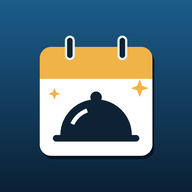

Apps Android
Para instalar en el móvil Android. Gratis y sin Google Play.

Eventos Palau
BEO del Palau de Congressos de Palma y Meliá Palma Bay. Avisa 30 min antes de cada servicio con F&B, aunque la app esté cerrada.
Ratios cocina
Cantidades por pax y material de cocina de cada evento.
Cómo se instala
- Pulsa «Descargar» y abre el archivo cuando termine.
- Si el móvil avisa de que no deja instalar apps de esta fuente, pulsa Ajustes, activa Permitir de esta fuente y vuelve atrás.
- Pulsa Instalar. Si sale un aviso de Play Protect, pulsa Instalar de todas formas.
- En Eventos Palau, al abrirla la primera vez, acepta las notificaciones.